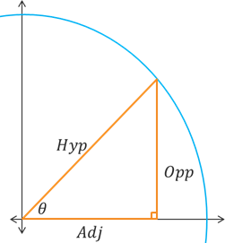
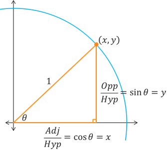
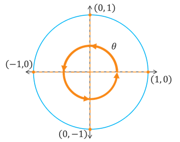
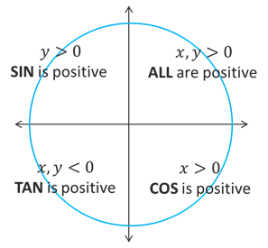
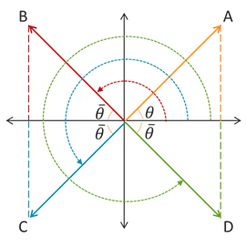

The Unit Circle
Trigonometric Functions
Trigonometric Functions
On the previous page, we learned about the unit circle and how we can determine the coordinates of terminal points along the circle for given terminal numbers or central angles. We also looked at some of the symmetry of these values. Now, we want to connect the values in the first quadrant of the unit circle to our trignometric functions. Later, we will leverage these symmetries to be able to evaluate the trignometric functions in any quadrant.
As a refresher, the coordinates of the terminal points that correspond to our special angles within the first quadrant are graphed below. We need to know these coordinates for both their degree and radian measures.
![The part of the unit circle contained within the 1st quadrant. There are five radials from the origin to the circle that represent different angles. The first radial is the positive x-axis which represents a 0 degree or 0 radian angle and it intersects the circle at the point (1, 0). The second radial forms a 30 degree or pi/6 radian angle with the positive x-axis and it intersects the circle at the point (√3/2, 1/2). The third radial forms a 45 degree or pi/4 radian angle with the positive x-axis and it intersects the circle at the point (√2/2, √2/2). The fourth radial forms a 60 degree or pi/3 radian angle with the positive x-axis and it intersects the circle at the point (1/2, √3/2). The last radial is the positive y-axis which forms a 90 degree or pi/2 radian angle with the positive x-axis and it intersects the circle at the point (0, 1).](angles-1st-quad.png)
Similar to how we developed some of the coordinates in the first quadrant for special triangles, let's again insert a right triangle into the first quadrant of our unit circle, this time in terms of our SOHCAHTOA setup.
Notice that in a more general sense, the hypotenuse could be any length and not just 1. But for our purposes at the moment, lets scale the circle and triangle by a factor related to the hypotenuse length. (The size of the triangles doesn't actually matter because the ratios of the sides of similar triangles are proportional.) The result is that we have a right triangle with hypotenuse of length 1, and an opposite and an adjacent side the correspond to the acute central angle.
The key takeaway here is that the \(y\) coordinate of the terminal point is equal to the sine of the corresponding angle and that the \(x\) coordinate of the terminal point is equal to the cosine of the corresponding angle.
For a terminal point \((x,y)\) located on the unit circle that corresponds to an acute central angle \(\theta\), we have the following.
\[\begin{align*} \sin(\theta) &= y \\ \cos(\theta) &= x \\ \tan(\theta) &= \frac{y}{x} \end{align*}\]Note that while sine and cosine are defined for every possible angle or value, the other trig functions have values for which they will be undefined.
To finally be able to compute the values of sine and cosine for any angle, there are just a few things that remain for us to consider. The first thing we need to cover is whether or not a given angle is coterminal to one of the coordinate axes, which we call a quadrantal angle. Examples of such angles would be 90°, \(\pi\), 360°, or \(-\frac{\pi}{2}\).
Notice in the above graph that any angle that is coterminal to the \(x\)-axis or \(y\)-axis will have a terminal point with one of the following coordinates: \((1,0)\), \((0,1)\), \((-1,0)\), or \((0,-1)\). Since we get the values for cosine and sine from the \(x\) and \(y\) values, respectively, we know that the cosine and sine of a quadrantal angle must be either -1, 0, or 1.
Example: Compute the exact values for (a) \(\sin(90^{\circ})\), (b) \(\cos(540^{\circ})\), and (c) \(\tan\left(\frac{3\pi}{2}\right)\).
a) Compute the exact value of \(\sin(90^{\circ})\).
A 90° central angle in standard position in the unit circle would have a terminal point on the positive \(y\)-axis. Its coordinates are \((0,1)\). Since sine is equal to the \(y\) coordinate, we get \(\sin(90^{\circ}) = 1\).
b) Compute the exact value of \(\cos(540^{\circ})\).
A 540° central angle is more than a full revolution around the unit circle. Subtracting 360° results in 180°. So a 540° angle is coterminal with a 180° angle, and both intersect the \(x\)-axis at the point \((-1,0)\). Since cosine is equal to the \(x\) coordinate, we get \(\cos(540^{\circ}) = -1\).
c) Compute the exact value of \(\tan\left(\frac{3\pi}{2}\right)\).
A \(\tan\left(\frac{3\pi}{2}\right)\) central angle would have a terminal point on the negative \(y\)-axis at the point \((0,-1)\). Since tangent is equal to \(\frac{y}{x}\), we get \(\tan\left(\frac{3\pi}{2}\right) = \frac{-1}{0}\) which is undefined.
Next, we want to look at the signs of the trig functions in each quadrant. See the following illustration.
 0 which means all trig functions are positive. In the second quadrant, we have y > 0 which means sine is positive. In the third quadrant, we have x,y < 0, which mean tangent is positive. If the fourth quadrant, we have x > 0, which means cosine is positive.">We just saw that \(\sin(\theta) = y\) and \(\cos(\theta) = x\), which means that the values of \(\sin(\theta)\) will be positive wherever \(y\) is positive and the values of \(\cos(\theta)\) will be positive wherever \(x\) is positive. This means that \(\sin(\theta) > 0\) in the 1st and 2nd quadrants while \(\cos(\theta) > 0\) in the 1st and 4th quadrants. Similarly, since \(\tan(\theta) = \frac{y}{x}\), we can conclude that tangent will be positive wherever \(x\) and \(y\) have the same sign. This means that \(\tan(\theta) > 0\) in the 1st and 3rd quadrants.
Example: In what quadrant is the terminal side of \(\theta\) located if \(\tan(\theta) < 0\) and \(\sin(\theta) > 0\)?
We know that \(\tan(\theta) > 0\) in the 1st and 3rd quadrants, which means \(\theta\) must be in either the 2nd or 4th quadrant. We also know that \(\sin(\theta) > 0\) in the 1st and 2nd quadrants. Only the 2nd quadrant satisfies both \(\tan(\theta) < 0\) and \(\sin(\theta) > 0\), so the terminal side of \(\theta\) must be in the 2nd quadrant.
The last thing we need to consider is something we have already talked about, namely referene angles. Remember that for any non-quadrantal angle \(\theta\), there is an acute angle \(\bar{\theta}\) that extends from the terminal side of \(\theta\) to the nearest \(x\)-axis. See the illustration below.
If we combine this idea of reference angles with the quadrant signs of the trig functions and the symmetries of the unit circle, then the value of a trig function at \(\theta\) will be equal to the value of the trig function at the corresponding reference angle \(\bar{\theta}\), except maybe opposite in sign.
\[\begin{align*} \sin(\theta) &= \pm\sin(\bar{\theta}) \\ \cos(\theta) &= \pm\cos(\bar{\theta}) \\ \tan(\theta) &= \pm\tan(\bar{\theta}) \end{align*}\]In the equations above, the sign depends on which quadrant the terminal side of \(\theta\) is located in.
Self-Check #1: What is the exact value of \(\sin\left(-\frac{3\pi}{4}\right)\)? (Select the most appropriate response.)
(Answer: B) -- The angle \(-\frac{3\pi}{4}\) is a clockwise rotation into the 3rd quadrant and it has a reference angle of \(\frac{\pi}{4}\). We know sine is negative in the 3rd quadrant and that \(\sin\left(\frac{\pi}{4}\right) = \frac{\sqrt{2}}{2}\). Putting this all together, we get \(\sin\left(-\frac{3\pi}{4}\right) = -\sin\left(\frac{\pi}{4}\right) = -\frac{\sqrt{2}}{2}\).
Self-Check #2: What is the exact value of \(\cos\left(\frac{5\pi}{3}\right)\)? (Select the most appropriate response.)
(Answer: C) -- The angle \(\frac{5\pi}{3}\) is a counterclockwise rotation into the 4th quadrant and it has a reference angle of \(\frac{\pi}{3}\). We know cosine is positive in the 4th quadrant and that \(\cos\left(\frac{\pi}{3}\right) = \frac{1}{2}\). Putting this all together, we get \(\cos\left(\frac{5\pi}{3}\right) = +\cos\left(\frac{\pi}{3}\right) = \frac{1}{2}\).
©2024 M4thG33x (new window) Some Rights Reserved.